청소년상담사-1급(2교시) (2019-10-05 기출문제)
1과목: 비행상담
1. 다음에서 제시된 법령의 적용연령이 동일한 것을 모두 고른 것은?
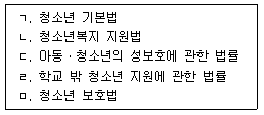
- ㄱ, ㄴ
- ㄷ, ㄹ
- ㄱ, ㄴ, ㄹ
- ㄷ, ㄹ, ㅁ
- ㄱ, ㄴ, ㄷ, ㅁ
(정답률: 알수없음)

2. 지위비행에 관한 설명으로 옳지 않은 것은?
- 형법을 위반하는 중한 일탈행위이다.
- 최대한 청소년의 이익이 되는 방향으로 처리한다.
- 지위비행의 피해당사자는 주로 자신이나 가족이다.
- 청소년이라는 사회적 지위 때문에 일탈행위로 간주된다.
- 음주, 흡연, 가출 등이 대표적 예이다.
(정답률: 알수없음)
3. 사이버비행의 대표적 특징이 아닌 것은?
- 익명성
- 다수의 가출 경험
- 죄의식 결여
- 가해와 피해의 중첩성
- 피해의 신속성과 광범위성
(정답률: 알수없음)
4. 특정인이 싫다고 했음에도 불구하고 인터넷이나 스마트폰을 통해 계속적으로 말, 글, 사진, 그림 등을 보내 공포심과 불안감을 유발하는 사이버 불링의 유형은?
- 사이버 비방
- 사이버 갈취
- 플레이밍
- 사이버 왕따 놀이
- 사이버 스토킹
(정답률: 알수없음)
5. 크로워드(R. Cloward)와 오린(L. Ohlin)의 차별기회이론(Differential Opportunity Theory)에 관한 설명으로 옳은 것을 모두 고른 것은?
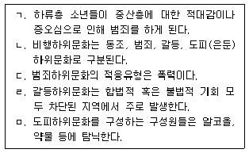
- ㄱ, ㄴ
- ㄱ, ㄹ
- ㄴ, ㄷ
- ㄷ, ㅁ
- ㄹ, ㅁ
(정답률: 알수없음)
6. 청소년비행의 이론과 학자를 바르게 연결한 것을 모두 고른 것은? (문제 오류로 실제 시험에서는 모두 정답처리 되었습니다. 여기서는 1번을 누르면 정답 처리 됩니다.)
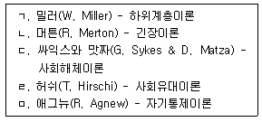
- ㄱ, ㄴ
- ㄴ, ㄷ
- ㄷ, ㄹ
- ㄹ, ㅁ
- ㄱ, ㄷ, ㅁ
(정답률: 알수없음)
7. 다음 사례에 해당하는 범죄학 이론은?
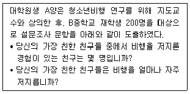
- 사회해체이론
- 차별접촉이론
- 낙인이론
- 억제이론
- 긴장이론
(정답률: 알수없음)
8. 생물학적 범죄원인론에 관한 설명으로 옳지 않은 것은?
- 개인의 생물학적 차이에 따라 인간의 행동에 영향을 미친다.
- 롬브로조(C. Lombroso)는 생물학적 관점을 기반으로 초기 범죄학의 토대를 마련하였다.
- 셸던(W. Sheldon)의 연구에 따르면, 근육형 청소년들 사이에서 비행 성향이 높게 나타났다.
- 글릭과 글릭(S. Glueck & E. Glueck)은 체형이 비행의 직접적인 원인이라고 주장하였다.
- 범죄행위의 유전적 영향을 밝히고자 쌍생아ㆍ입양아 연구가 진행되었다.
(정답률: 알수없음)
9. 아동ㆍ청소년의 성보호에 관한 법령 상 성범죄로 유죄판결이 확정된 자의 신상정보 공개에 관한 설명으로 옳지 않은 것은?
- 여성가족부장관은 공개정보를 열람할 수 있는 전용 웹사이트를 구축ㆍ운영하여야 한다.
- 신체 정보인 키와 몸무게, 등록된 사진을 공개한다.
- 주소 및 실제 거주지는 도로명 및 건물번호까지 표기한다.
- 웹사이트를 이용하여 공개정보를 열람하려는 사람은 실명인증을 받아야 한다.
- 여성가족부장관은 게시판 게시 업무를 고지대상자가 실제 거주 하는 시, 군, 구의 장에게 위임한다.
(정답률: 알수없음)
10. 학교폭력 중 빵 셔틀, 와이파이 셔틀은 어느 유형에 속하는가?
- 금품갈취
- 명예훼손, 모욕
- 강제적 심부름
- 사이버폭력
- 상해, 폭행
(정답률: 알수없음)
11. 청소년 성폭력 가해자 치료 프로그램의 목표에 해당하지 않는 것은?
- 재발방지를 위하여 적극적인 교정활동에 참여한다.
- 왜곡된 인지를 교정하여 성폭력에 대한 책임을 인정한다.
- 피해자의 상처에 대한 공감능력을 향상시킨다.
- 사회인지 기술을 학습시켜 대인관계 기술을 발달시킨다.
- 자신의 성적 욕구를 해소하도록 교육한다.
(정답률: 알수없음)
12. A군의 MMPI 심리검사 결과 임상척도 중 4-9 척도가 동반 상승하였다. 이 결과에 관한 설명으로 옳은 것을 모두 고른 것은?
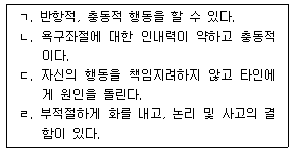
- ㄱ, ㄴ
- ㄷ, ㄹ
- ㄱ, ㄴ, ㄷ
- ㄴ, ㄷ, ㄹ
- ㄱ, ㄴ, ㄷ, ㄹ
(정답률: 알수없음)
13. 가출행동을 설명하는 요인들로 옳게 연결된 것은?
- 위험요인 - 유해환경, 사회적 지지
- 보호요인 - 교사와 갈등, 부모의 통제
- 가정 위험요인 - 충동적 성향, 부모의 갈등
- 개인 위험요인 - 낮은 자존감, 다양한 대처전략
- 사회환경 위험요인 - 가출한 이성친구, 유해환경
(정답률: 알수없음)
14. 범죄청소년 조사에 사용되는 PAI(Personality Assessment Inventory) 성격검사의 치료척도에 해당하는 것은?
- 불안
- 비지지
- 지배성
- 반사회적 특성
- 비일관성
(정답률: 알수없음)
15. 한국형 인터넷 중독 자가진단검사인 K 척도의 구성요인에 해당하는 것을 모두 고른 것은?
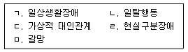
- ㄱ, ㄴ, ㄷ
- ㄴ, ㄷ, ㄹ
- ㄱ, ㄴ, ㄷ, ㄹ
- ㄴ, ㄷ, ㄹ, ㅁ
- ㄱ, ㄴ, ㄷ, ㄹ, ㅁ
(정답률: 알수없음)
16. 비행을 저지른 소년의 인지적 기능을 K-WAIS를 통해 확인하고자 한다. K-WAIS 검사 중에 지식의 일상생활 활용능력을 측정하며 사회적 규범이나 관습에 대한 이해, 내면화의 정도를 나타내는 소검사는?
- 이해문제
- 상식문제
- 숫자문제
- 차례맞추기
- 모양맞추기
(정답률: 알수없음)
17. A양은 중간고사 이후 학교에 가지 않겠다고 하였다. 엄마는 이런 A양이 걱정되어 옷을 사준다고 속여 상담실에 데리고 왔다. 상담의 효과를 의심하는 A양에게 상담자가 첫 시간에 하지 않아야 하는 것은?
- A양이 원하는 것이 무엇인지 확인한다.
- 엄마에게 속아서 온 것에 대한 억울함을 공감한다.
- 상담의 분위기를 희망적이고 긍정적이게 이끈다.
- A양이 중간고사 이후 학교가기 싫어하는 점을 직면 시킨다.
- 상담의 효과를 의심하는 A양을 수용하고 반영한다.
(정답률: 알수없음)
18. 비행청소년 동기강화 상담 중 다음 기법에 해당하는 것은?
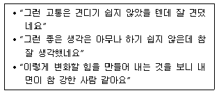
- 인정하기
- 열린질문하기
- 변화대화하기
- 반영하기
- 요약하기
(정답률: 알수없음)
19. 품행문제를 보이는 청소년의 부모를 대상으로 한 행동주의 훈련의 내용으로 옳은 것을 모두 고른 것은?
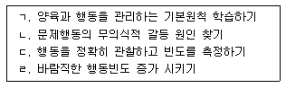
- ㄱ, ㄴ
- ㄷ, ㄹ
- ㄱ, ㄴ, ㄷ
- ㄱ, ㄷ, ㄹ
- ㄴ, ㄷ, ㄹ
(정답률: 알수없음)
20. 교육청별로 운영하고 있는 Wee 프로젝트에 관한 설명으로 옳지 않은 것은?
- Wee 스쿨은 2차 안전망에 해당된다.
- Wee 프로젝트는 모든 학생을 대상으로 하되, 주 대상은 위기에 놓인 학생이다.
- 학교와 교육청 및 지역사회가 연계된 다중 안전망을 통한 학생생활지도 전략이다.
- Wee는 We(우리들)와 education(교육), emotion(감성)의 합성어이다.
- Wee 버스는 물리적ㆍ지역적 환경으로 인해 상담 서비스를 받지 못하는 지역의 학생들을 위해 찾아가는 상담서비스이다.
(정답률: 알수없음)
21. 약물 문제를 가지고 있는 B양은 상담을 통해 자신이 “감기약을 먹고 몽롱한 상태에서 기타를 치면 훨씬 더 예술적으로 잘 할 수 있을 거야”라는 생각을 가지고 있다는 것을 알게 되었다. 이때 상담자가 선택할 수 있는 적절한 상담이론은?
- 현실치료
- 합리적 정서행동치료
- 실존치료
- 정신분석
- 교류분석
(정답률: 알수없음)
22. 다음에서 기술하는 업무를 담당하는 자는?
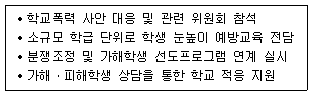
- 학교장
- 피해자지원경찰관
- 학교전담경찰관
- 전문상담교사
- 생활지도교사
(정답률: 알수없음)
23. 제6차 청소년정책기본계획(2018-2022년)의 정책기조 및 과제에 관한 내용이 아닌 것은?
- 청소년 참여 확대
- 청소년을 존중하는 사회적 기반 강화
- 청소년 주도 활동 활성화를 위한 정책 패러다임으로 전환
- 보편적ㆍ통합적 청소년 정책 추진
- 차별 없이 성장할 수 있는 사회적 안전망 강화
(정답률: 알수없음)
24. 회복적 사법(restorative justice)에 관한 설명으로 옳지 않은 것은?
- 회복적 사법의 대표적인 형태는 피해자와 가해자의 화해, 집단회의이다.
- 가해자를 중심으로 한 응보적 사법모델이다.
- 재통합적 수치심(reintegrative shaming)이론은 회복적 사법의 이론적 배경을 제공한다.
- 소년보호사건의 경우 판사가 소년에게 피해자와의 화해를 권고할 수 있다.
- 범죄로 인해 발생한 피해를 회복함으로써 사법정의의 실현을 지향하는 활동이다.
(정답률: 알수없음)
25. 학교 밖 청소년 지원에 관한 법령 상 학교 밖 청소년 지원위원회에 관한 설명으로 옳은 것은?
- 지원위원회는 위원장 1인을 포함한 10명 이내의 위원으로 구성한다.
- 지원위원회의 위원장은 여성가족부장관이 된다.
- 지원위원회는 여성가족부장관이 위촉하는 5명 이내의 민간위원을 포함한다.
- 지원위원회 회의는 재적위원의 3분의 1이상의 요구가 있거나 위원장이 필요하다고 인정할 때 소집한다.
- 특정ㆍ별정직을 제외한 고위공무원단에 속하는 일반공무원 중 소속 기관의 장이 지명하는 자를 포함한다.
(정답률: 알수없음)
2과목: 성상담
26. 아동ㆍ청소년 성보호에 관한 법률 시행령에서 정하는 수사절차에서의 피해자 보호조치에 관한 내용으로 옳은 것을 모두 고른 것은?
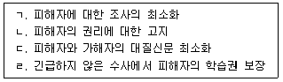
- ㄱ, ㄴ
- ㄴ, ㄷ
- ㄱ, ㄴ, ㄷ
- ㄴ, ㄷ, ㄹ
- ㄱ, ㄴ, ㄷ, ㄹ
(정답률: 알수없음)
27. 성폭력 피해사실을 호소한 A양에게 상담자가 해야 할 질문으로 옳지 않은 것은?
- 언제 피해를 당했습니까?
- 피해 장소가 어디입니까?
- 피해사실을 목격한 사람이 있습니까?
- 가해자가 어떠한 말과 행동을 했습니까?
- 왜 그곳에 갔습니까?
(정답률: 알수없음)
28. 데이트 성폭력에 관한 설명으로 옳지 않은 것은?
- 데이트 중 감시와 통제의 행위도 데이트 성폭력에 해당한다.
- 데이트 시 성행동 요구에 대한 정확한 의사표현이 중요하다.
- 데이트 비용 부담과 데이트 성폭력은 무관하다.
- 교제 시 성문제는 애정문제로 해석되어 가해자와 피해자 모두 인식이 어렵다.
- 성에 대한 솔직한 의사소통과 서로에 대한 존중이 데이트 성폭력의 대처방안이다.
(정답률: 알수없음)
29. 성폭력 피해자의 의료 및 법률지원에 관한 내용으로 옳은 것은?
- 증거채취를 위해 육안으로 보이는 외상 위주로 사진을 찍어두고 샤워를 하도록 안내한다.
- 성폭력 피해로 인한 증거채취와 검진은 피해자나 가족의 동의 없이 가능하다.
- 성폭력사건은 친고죄에 적용된다.
- 공소시효는 성폭력 피해를 당한 미성년자가 성년에 달한 날로부터 진행한다.
- 손해배상은 형사소송을 통해 할 수 있다.
(정답률: 알수없음)
30. 성폭력 피해자대상 집단상담에 관한 설명으로 옳지 않은 것은?
- 동질집단의 구성이 효과적이다.
- 같은 경험을 공유하고 있어 신뢰형성 및 동맹이 용이하다.
- 폐쇄집단 운영이 적절하다.
- 피해경험을 공유하기 위해 규모가 클수록 효과적이다.
- 피해정도 및 자아강도에 따라 외상에 대한 직면의 수위를 조절해야 한다.
(정답률: 알수없음)
31. 변태성욕장애(Paraphilic Disorders)에 관한 설명으로 옳은 것은?
- 성별 불쾌감으로 이성의 옷을 입는 경우 의상전환장애로 본다.
- 변태성욕장애는 정상적인 성행위의 욕구, 흥분, 절정단계에 비정상적 반응이 나타나는 경우를 말한다.
- 변태성욕장애의 핵심진단 특징은 부적절한 성적 행위를 6개월 이상 지속적이고 반복적으로 나타난다.
- 여성과 남성이 비슷한 비율로 진단된다.
- 자신의 성적 욕구충족을 위해 자신의 성기를 동의하지 않는 타인에게 접촉하는 것을 물품음란장애라고 한다.
(정답률: 알수없음)
32. 성폭력 피해자의 특성으로 옳은 것을 모두 고른 것은?
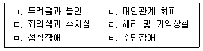
- ㄱ, ㄴ, ㄷ, ㄹ
- ㄱ, ㄷ, ㄹ, ㅁ
- ㄴ, ㄷ, ㄹ, ㅁ
- ㄷ, ㄹ, ㅁ, ㅂ
- ㄱ, ㄴ, ㄷ, ㄹ, ㅁ, ㅂ
(정답률: 알수없음)
33. 다음에서 설명하는 사이버성폭력은?
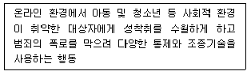
- 온라인 그루밍
- 사진 성적 합성 후 게시
- 사이버공간 내 성적 괴롭힘
- 유포협박
- 사이버스토킹
(정답률: 알수없음)
34. 성상담자가 가져야 할 윤리적 태도로 옳지 않은 것은?
- 심각한 성피해 트라우마를 겪는 청소년을 돕는데 한계가 느껴져 다른 상담자에게 의뢰하였다.
- 동성애 고민을 하는 청소년 내담자의 성적 지향성을 존중하였다.
- 성피해를 당한 친구의 딸을 돕기 위해 다른 상담자를 의뢰하였다.
- 성상담 전문성을 위해 교육에 지속적으로 참여하고 있다.
- 성피해 청소년 내담자와 상담실 밖에서 만남과 지속적인 메시지를 주고받고 있다.
(정답률: 알수없음)
35. 성별 불쾌감(Gender Dysphoria)에 관한 설명으로 옳지 않은 것은?
- 생물학적 성과 성역할의 불일치로 불편감을 호소하는 장애이다.
- 다른 성을 희망한다는 점에서 성전환증이라고 한다.
- 동성애자들이 이에 해당한다.
- 성별 불쾌감의 유병률은 남성이 더 높다.
- 성전환 수술이 주요 치료방법이다.
(정답률: 알수없음)
36. 다음 G양을 돕기 위한 상담자의 개입으로 옳지 않은 것은?
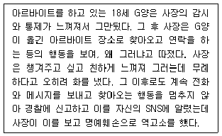
- 가해자의 역고소에 대응하기 위한 법률지원
- 역고소에 대해 위축되지 않도록 정서 및 심리적 지원
- 경찰에 신변보호 요청
- 민사상 접근금지가처분 신청을 위해 검사에게 요청
- 통화내역, 문자 등의 구체적인 증거를 준비하도록 지원
(정답률: 알수없음)
37. 다음은 헤스터(M. Hester)와 웨스트말랜드(N. Westmarland)의 성매매 청소년의 개입전략 중 어느 단계인가?
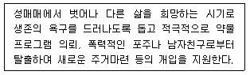
- 혼돈단계
- 취약단계
- 안정화단계
- 탈출 후 변화단계
- 예견단계
(정답률: 알수없음)
38. 다음 예문에 관한 설명으로 옳은 것은?
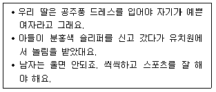
- 성의 양극화
- 성역할 고정관념
- 성차별주의
- 성 동일시
- 성의 진화
(정답률: 알수없음)
39. 청소년의 준비된 성행동 기준에 관한 설명으로 옳지 않은 것은?
- 피임에 대해 정확히 인지한다.
- 성병에 걸릴 위험이 없다.
- 서로의 성관계에 대한 동의와 합의를 한다.
- 임신이 되면 아이를 낳아 키울 준비가 되어있다.
- 미래 결혼을 약속한다.
(정답률: 알수없음)
40. 근ㆍ현대 성연구자들의 연구 업적 연계로 옳은 것은?
- 에빙(K. Ebing): 성의 정신이상에 관한 출판물을 발간했으며, 현대 성학(性學)의 창시자이다.
- 엘리스(H. Ellis): 인간의 성 생리 관찰과 실험 연구로 성혁명을 가져왔다.
- 킨제이(A. Kinsey): 기능장애의 심리치료 보고서를 출간하였다.
- 매스터스와 존슨(W. Masters & V. Johnson): 여성의 성적 특질에 대한 연구가 저명하다.
- 카플란(H. Kaplan): <여성과 사랑>이란 보고서에서 여성의 혼외문제를 다루었다.
(정답률: 알수없음)
41. 성폭력피해상담소의 업무로 옳지 않은 것은?
- 데이트 폭력, 스토킹 피해의 신고접수와 상담
- 성폭력 예방을 위한 홍보와 교육
- 피해자의 질병치료를 위한 의료기관 인도 등의 의료지원
- 성폭력 피해로 긴급보호가 필요한 경우 경찰서로 연계
- 피해자에 대한 수사기관의 조사 및 법원의 증인심문 동행
(정답률: 알수없음)
42. 피임주사, 피하이식 피임, 피임패치에 공통으로 사용되는 호르몬은?
- 테스토스테론
- 프로게스테론
- 옥시토신
- 도파민
- 세로토닌
(정답률: 알수없음)
43. 사회ㆍ심리적 성과 관련된 용어의 설명으로 옳은 것은?
- 양성성(androgyny): 성역할의 남성성과 여성성이 동시에 내재화 되어 있는 경향
- 성유형화(sex typing): 생물학적 성에 기반한 역할이나 업무를 부여
- 섹시즘(sexism): 남녀차이에 의한 매력적인 경향
- 퀴어(queer): 동성애자와 이성애자를 지칭하는 성적 표현 언어
- 양성평등주의(gender equality ideology): 남성과 여성은 생물학적으로 본질이 같다고 주장함
(정답률: 알수없음)
44. 아동ㆍ청소년 성폭력에 관한 설명으로 옳지 않은 것은?
- 성적 학대를 경험한 아동은 죄의식과 두려움을 가진다.
- 근친에 의한 성 학대경험을 한 아동은 역할에 대한 갈등, 억압된 분노와 적대심이 있다.
- 아동 성폭력 가해자는 자아존중감이 높은 사람이다.
- 아동 앞에서 가해자에 대한 심한 말을 피한다.
- 사춘기의 여성은 성적 학대로 임신 가능성이 있다.
(정답률: 알수없음)
45. 임신 증상에 관하여 옳은 것을 모두 고른 것은?
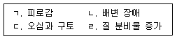
- ㄱ, ㄷ
- ㄴ, ㄷ
- ㄷ, ㄹ
- ㄴ, ㄷ, ㄹ
- ㄱ, ㄴ, ㄷ, ㄹ
(정답률: 알수없음)
46. 음란물 매체 접촉의 파급에 관한 설명으로 옳지 않은 것은?
- 생리적 각성을 장기적으로 일으킨다.
- 성윤리 왜곡을 가져온다.
- 성교에 대한 그릇된 인식이 확산된다.
- 성폭력(성범죄)이 증가된다.
- 남녀차별의식이 심화된다.
(정답률: 알수없음)
47. 다음 용어 설명으로 옳지 않은 것은?
- 젠더: 사회ㆍ문화ㆍ심리적 환경에 의해 학습된 성 특성
- 섹슈얼리티: 성교, 성행동을 총괄하는 성 특성
- 색(色): 성행동이나 쾌락적 의미를 나타내는 성 특성
- 섹스: 생물학적 남녀로서 구별을 나타내는 성 특성
- 성적 정체성: 해부학적 개인 성별에 따른 성 정체성
(정답률: 알수없음)
48. 청소년기 이성교제의 기능을 모두 고른 것은?
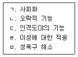
- ㄱ, ㄴ, ㄹ
- ㄴ, ㄷ, ㄹ
- ㄷ, ㄹ, ㅁ
- ㄱ, ㄴ, ㄷ, ㄹ
- ㄴ, ㄷ, ㄹ, ㅁ
(정답률: 알수없음)
49. 사춘기의 성적 발달에 관한 설명으로 옳은 것은?
- 신장과 체중의 발달은 남성이 여성보다 먼저 나타난다.
- 사춘기의 성 변화를 주도하는 것은 내분비 호르몬의 작용이다.
- 음경의 크기는 성적 능력과 관련된다.
- 여성의 월경 양이 많으면 그렇지 않은 사람보다 건강하다.
- 처녀막은 순결의 상징이다.
(정답률: 알수없음)
50. 청소년성문화센터와 관련한 내용으로 옳지 않은 것은?
- 아동ㆍ청소년의 건전한 성가치관을 조성하는 기관
- 아동ㆍ청소년 대상 성교육 전문기관
- 청소년복지 지원법에 의해 설치된 기관
- 다양한 매체를 활용한 체험형 또는 현장중심 학습 기관
- 성교육 전문가 양성 프로그램 운영 기관
(정답률: 알수없음)
3과목: 약물상담
51. 여성의 약물중독에 관한 설명으로 옳지 않은 것은?
- 남성에 비해 복합 약물 사용이 적은 편이다.
- 생물학적으로 남성과 다른 약물효과를 보인다.
- 남성에 비해 사회적 낙인이 심하다.
- 대부분 남성보다 약물을 늦게 시작하나, 중독 진행과정은 더 빠른 편이다.
- 약물사용 상태에서 폭력피해 위험이 높다.
(정답률: 알수없음)
52. 중추신경 흥분제를 모두 고른 것은?
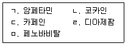
- ㄱ, ㄴ
- ㄱ, ㄴ, ㄷ
- ㄴ, ㄹ, ㅁ
- ㄴ, ㄷ, ㄹ, ㅁ
- ㄱ, ㄴ, ㄷ, ㄹ, ㅁ
(정답률: 알수없음)
53. 흡입제 남용징후를 모두 고른 것은?
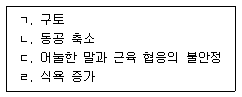
- ㄱ, ㄴ
- ㄱ, ㄷ
- ㄴ, ㄷ
- ㄴ, ㄷ, ㄹ
- ㄱ, ㄴ, ㄷ, ㄹ
(정답률: 알수없음)
54. 질병이론의 관점에서 중독에 관한 설명으로 옳지 않은 것은?
- 중독은 조절 가능한 질환이다.
- 중독은 일차적 질병이다.
- 중독은 선천적인 신체적 이상으로 인해 발생한다.
- 중독은 진행성 질환이다.
- 젤리넥(E. Jellinek)은 중독을 질병으로 보고 유형화 하였다.
(정답률: 알수없음)
55. 중독 용어에 관한 설명으로 옳지 않은 것은?
- 금단(withdrawal)은 물질 사용을 줄이거나 습관적 행위 등을 중단할 때 나타나는 증상을 말한다.
- 갈망(craving)은 약물 또는 행위에 관련된 기억, 환경 자극에 의해 유발되는 조건화된 반응을 말한다.
- 이중진단(dual diagnosis)은 두 약물의 약리작용 또는 약물의 작용부위가 유사할 때 내려지는 진단을 말한다.
- 재발(relapse)은 회복된 이후에 중독 증상이 다시 나타나는 것을 말한다.
- 물질(substance)은 뇌에 영향을 주어 의식이나 마음을 변화시키는 것을 의미한다.
(정답률: 알수없음)
56. 청소년 약물남용 3차 예방 활동으로 옳은 것은?
- 소년약물법원 대체프로그램
- 주류 판매시간 제한
- 고위험 청소년에 대한 조기 선별
- 약물남용 예방교육
- 유흥업소 종사자 훈련
(정답률: 알수없음)
57. 12단계 치료모델에 관한 설명으로 옳은 것을 모두 고른 것은?
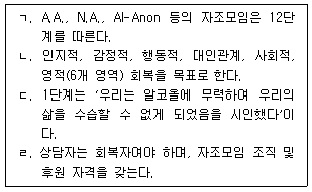
- ㄱ, ㄴ
- ㄷ, ㄹ
- ㄱ, ㄴ, ㄷ
- ㄴ, ㄷ, ㄹ
- ㄱ, ㄴ, ㄷ, ㄹ
(정답률: 알수없음)
58. DSM-5에서 알코올사용장애 진단기준에 관한 설명으로 옳은 것은?
- 증상의 갯수로 알코올사용장애 심각도를 분류한다.
- 알코올로 인한 법적문제가 진단기준에 포함된다.
- 알코올사용장애를 알코올 남용과 의존으로 구분한다.
- 교차중독 현상이 진단기준에 포함된다.
- 음주량과 음주횟수가 진단기준에 포함된다.
(정답률: 알수없음)
59. 청소년 약물중독 이론과 원인의 연결이 옳게 짝지어진 것은?
- 선택적 상호작용 이론: 상황적 요인
- 단계 이론: 약물사용 효과 및 이득에 대한 판단능력
- 체계이론적 접근: 사회심리적 발달상의 문제
- 유전적 접근: 학령기 이전의 공격성, 피상적 대인관계
- 사회적 무능력 모델: 사회적 기술 부족
(정답률: 알수없음)
60. A상담사가 다음의 상담계획을 수립 할 때 적합한 이론적 접근은?
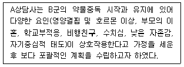
- 사회학습이론
- 성격 모델
- 공중보건모델
- 생물심리사회적 - 영적 모델
- 선택적 상호작용이론
(정답률: 알수없음)
61. 약물남용 관련법에 관한 내용으로 옳지 않은 것은?
- 여성가족부장관은 판별검사, 치료와 재활에 필요한 비용의 전부 또는 일부를 지원할 수 있다.
- 여성가족부장관은 청소년보호ㆍ재활센터를 설치 및 운영할 수 있다.
- 성인인증장치가 부착된 담배자동판매기를 설치하여 담배를 판매해야 한다.
- 환각물질 중독 판별검사, 중독 치료 및 재활 신청은 직계존속만 할 수 있다.
- 청소년 출입 및 고용금지업소를 제외한 업소에서 주류나 담배를 판매ㆍ대여ㆍ배포하는 경우 청소년을 대상으로 이를 금지하는 내용을 표시해야 한다.
(정답률: 알수없음)
62. 미국중독의학회(ASAM)에서 제시한 적정수준 배치기준(PPC)으로 옳은 것은?
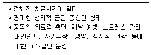
- 외래치료
- 집중외래치료
- 집중입원치료
- 응급입원
- 거주치료
(정답률: 알수없음)
63. 밀러(W. Miller)와 롤릭(S. Rollnick)이 제시한 동기면담의 원리로 옳지 않은 것은?
- 불일치감 만들기
- 저항과 함께 구르기
- 자기효능감 지지하기
- 공감 표현하기
- 고위험상황 대처하기
(정답률: 알수없음)
64. 중독자 가족상담의 목표로 옳은 것을 모두 고른 것은?
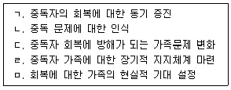
- ㄱ, ㄴ
- ㄴ, ㄹ
- ㄱ, ㄴ, ㅁ
- ㄴ, ㄷ, ㄹ, ㅁ
- ㄱ, ㄴ, ㄷ, ㄹ, ㅁ
(정답률: 알수없음)
65. 중독치료에서 집단상담을 선택하는 이유로 옳지 않은 것은?
- 비슷한 문제를 경험한 타인과 상호작용할 기회를 제공한다.
- 안전한 환경에서 다른 집단원을 통해 새로운 행동양식과 문제 대처방안을 탐색할 수 있다.
- 집단을 통해 새로운 인간관계를 경험함으로써 소외감을 극복한다.
- 집단을 통해 자신의 부정적인 행동패턴을 인식하게 된다.
- 자신의 욕구와 감정을 표현하기보다 타인을 관찰할 기회를 제공한다.
(정답률: 알수없음)
66. 약물문제가 의심되는 청소년에게 적용할 수 있는 선별 척도로 옳게 짝지어진 것은?
- KAPPI와 CAI
- MAST와 T-ACE
- KAPPI와 POSIT
- AUDIT와 TWEAK
- MAST와 POSIT
(정답률: 알수없음)
67. 흡연을 하는 청소년 A양과의 상담에서 개인상담 지침으로 옳지 않은 것은?
- 개별화된 치료적 접근 방식을 따른다.
- 내담자를 직면하여 문제점을 인식하도록 한다.
- 장기간 회복을 고려한 사회적ㆍ환경적인 측면에 초점을 맞춘 다면적인 치료를 제공한다.
- 내담자의 특성에 적합한 다문화적인 관점을 적용한다.
- 새로운 방법과 목표에 개방적 태도를 가진다.
(정답률: 알수없음)
68. 문제음주청소년을 위한 단기개입의 FRAMES 요소로 옳지 않은 것은?
- Responsibility(변화에 대한 개인적 책임)
- Advice(변화를 위한 확실한 조언)
- Management(관리)
- Empathy(감정이입)
- Self-efficacy(자기효능감)
(정답률: 알수없음)
69. 치료공동체의 설명으로 옳은 것은?
- 치료공동체는 현실치료모델에 기반한다.
- 치료공동체는 회복자 상담가만을 직원으로 채용한다.
- 치료공동체는 공동체 안에서 거주자보다 자신의 변화를 최우선으로 한다.
- 치료공동체의 기원은 옥스퍼드 그룹(Oxford Group)에서 출발하였다.
- 치료공동체는 공동체적 치료를 위한 한 가지 방법을 적용하고 있다.
(정답률: 알수없음)
70. 다음은 고르스키(T. Gorski)가 제안한 재발회복단계 중 어느 단계에 해당하는가?
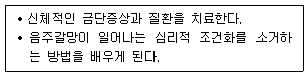
- 전환기
- 안정화기
- 초기회복기
- 중기회복기
- 후기회복기
(정답률: 알수없음)
71. 담배갑 경고 문구에 표기해야 할 사항으로 옳지 않은 것은?
- 흡연의 폐해를 나타내는 내용의 경고 그림
- 폐암 등 질병의 원인이 될 수 있다는 내용
- 경고 그림과 경고 문구는 담배갑 포장지의 100분의 30이상의 해당하는 크기로 함
- 담배에 포함된 발암성물질 표시
- 금연상담전화의 전화번호
(정답률: 알수없음)
72. 다음에서 설명하는 이중진단 치료모델은?
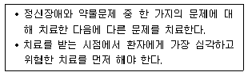
- 통합치료모델
- 평행적 치료모델
- 제2차 물질남용 모델
- 상호작용모델
- 순차적 치료모델
(정답률: 알수없음)
73. 중독상담에서 활용하는 인지행동기법으로 옳은 것은?
- 양면은유
- 소크라테스 질문법
- 인지적 탈융합
- 저항분석
- 빈 의자 기법
(정답률: 알수없음)
74. 벤조디아제핀 계열 약물에 관한 설명으로 옳지 않은 것은?
- 신경안정제와 수면제 등의 의약품이 주로 해당된다.
- 남용할 경우 각성능력과 반사작용이 떨어진다.
- 고혈압 환자들에게 자주 처방된다.
- 반감기가 짧은 물질일수록 금단증상이 빠르게 나타난다.
- 약물 공급이 중단될 때 대체 약물로 사용한다.
(정답률: 알수없음)
75. 약물이 의약품으로 사용된 역사에 관한 설명으로 옳은 것은?
- 우울하거나 불안한 아이에게 아편을 복용시켰다.
- 필로폰은 최초의 국소마취제였다.
- 코카인은 난치성 통증에 처방되었다.
- 코데인은 비만치료제로 처방되었다.
- 엑스터시는 정신요법에 사용된 약물이었다.
(정답률: 알수없음)
4과목: 위기상담
76. 학교폭력예방 및 대책에 관한 법률 상 학교폭력 가해자인 중학생 K군에게 취할 수 없는 조치는?
- 교내봉사
- 사회봉사
- 특별 교육 이수 또는 심리치료
- 전학
- 퇴학처분
(정답률: 알수없음)
77. 다음 사례에서 학교 상담사가 국가 및 지방자치단체 위기청소년 특별지원 사업과 연계 시, 지원 가능한 내용이 아닌 것은?
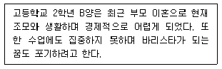
- 금전의 형태로 제공하는 사회ㆍ경제적 지원
- 학업지원, 의료지원
- 바리스타 직업훈련 지원
- 가구의 소득과 무관한 실비 지원
- 청소년활동지원
(정답률: 알수없음)
78. 교육부에서 실시한 2019년도 1차 학교폭력 실태 전수조사에 관한 설명으로 옳지 않은 것은?
- 학생 천 명당 피해유형별 응답건수는 지난해와 비교해 대부분의 피해유형에서 감소한 것으로 나타났다.
- 피해유형별로 차지하는 비중은 언어폭력, 집단따돌림, 사이버 괴롭힘의 순이다.
- 피해응답률 상승에 영향을 미친 것은 신체폭행, 성추행ㆍ성폭행의 비중 증가 때문이다.
- 초등학생의 피해응답률이 중ㆍ고등학생에 비해 증가하는 추세이다.
- 학교폭력 피해 사실을 주위에 알리거나 신고하는 비율은 매년 증가하고 있는 추세이다.
(정답률: 알수없음)
79. 다음에서 제시한 올베우스(D.Olweus)의 따돌림 피해자의 유형은?
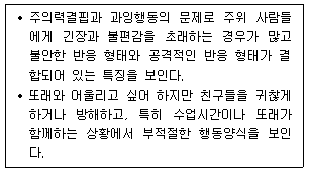
- 피해자이면서 가해자
- 수동적 피해자
- 도발적 피해자
- 불안장애 피해자
- 과잉행동 피해자
(정답률: 알수없음)
80. DSM-5에 분류된 외상후 스트레스장애(PTSD) 진단 관련 내용으로 옳은 것을 모두 고른 것은?
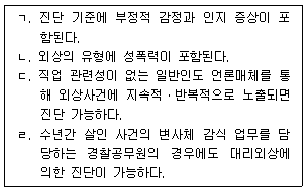
- ㄱ, ㄴ
- ㄷ, ㄹ
- ㄱ, ㄴ, ㄹ
- ㄴ, ㄷ, ㄹ
- ㄱ, ㄴ, ㄷ, ㄹ
(정답률: 알수없음)
81. 이혼가정 부모가 자녀에게 충성심의 갈등을 갖게 하는 원인으로 옳지 않은 것은?
- 전 배우자에 대한 미움
- 전 배우자와의 경쟁
- 이혼에 대한 정당성을 찾음
- 자녀의 삶에 통제력을 행사하려는 욕구
- 전 부모에 대한 자녀의 상실감을 수용하려는 욕구
(정답률: 알수없음)
82. 다음 중 상황적 위기에 해당되는 것을 모두 고른 것은?
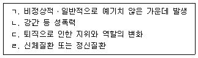
- ㄱ, ㄴ
- ㄴ, ㄷ
- ㄱ, ㄷ, ㄹ
- ㄴ, ㄷ, ㄹ
- ㄱ, ㄴ, ㄷ, ㄹ
(정답률: 알수없음)
83. 골란(N. Golan)의 위기단계를 순서대로 바르게 나열한 것은?
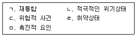
- ㄱ → ㅁ → ㄴ → ㄹ → ㄷ
- ㄷ → ㄹ → ㄴ → ㅁ → ㄱ
- ㄷ → ㄹ → ㅁ → ㄴ → ㄱ
- ㄷ → ㅁ → ㄹ → ㄴ → ㄱ
- ㄹ → ㄷ → ㅁ → ㄱ → ㄴ
(정답률: 알수없음)
84. 청소년 위기반응에 관한 설명으로 옳지 않은 것은?
- 아동기와 청소년기에 따른 위기반응의 차이는 없다.
- 학교에 대한 흥미를 잃는다.
- 퇴행된 행동을 한다.
- 비행기나 큰 소리에 대해 위기상황과 같은 공포를 갖는다.
- 공포감정은 가정이나 이웃에 영향을 미친다.
(정답률: 알수없음)
85. 위기청소년의 비행을 유발하는 가족요인으로 옳지 않은 것은?
- 문제행동에 대한 허용적 태도
- 민주적이고 일관된 양육태도
- 부모에 대한 애착 결핍
- 가족구조의 결손
- 학대적 양육태도
(정답률: 알수없음)
86. 위기이론의 기본 가정에 관한 설명으로 옳은 것은?
- 위기상황을 해결하는 동안 개인은 도움에 대해 저항적이다.
- 위기개입 상담자의 역할은 수동적이며 중립적이어야 한다.
- 위기개입 상담자는 무의식적 갈등에 역점을 둔다.
- 위기상황은 일반적으로 위험한 상황에 의해서 유발된다.
- 위기개입은 이전까지 정상적으로 기능을 수행해 온 개인에게는 적합하지 않다.
(정답률: 알수없음)
87. 가정폭력 가해자 대상 프로그램 중 다음 특성에 해당하는 접근 방법은?
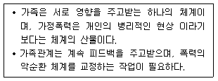
- 가족체계론적 접근
- 여성주의적 접근
- 가족 의사소통적 접근
- 사회학습 공격이론적 접근
- 정신분석학적 접근
(정답률: 알수없음)
88. 다음 상황으로 인해 B양이 경험할 수 있는 정서적ㆍ심리적 특징으로 옳지 않은 것은?
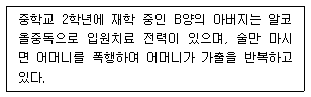
- 가출해서 문제를 일으킨다.
- 괴롭고 어떤 일이 일어날 것 같이 불안하다.
- 제대로 공부하지 못하고 집중할 수 없다.
- 우울하고 의기소침해 진다.
- 아버지에 대한 사랑이 불안, 심지어 증오로 바뀐다.
(정답률: 알수없음)
89. 인터넷ㆍ스마트폰 과의존 청소년들을 대상으로 실시하는 11박 12일 기숙형 치유캠프의 지원 내용에 해당하지 않는 것은?
- 멘토링
- 내일이룸학교 연계
- 대안활동
- 체험활동
- 가족상담
(정답률: 알수없음)
90. 다음에서 설명하는 외상 사건에 관한 치료 기법은?
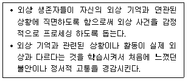
- 심리적 디브리핑 기법
- 안구운동 둔감화와 재처리 기법
- 지속 노출 치료
- 점진적 근육 이완법
- 인지 재구조화 기법
(정답률: 알수없음)
91. 지역사회청소년통합지원체계(CYS-Net: 청소년안전망)의 필수연계기관에 해당되지 않는 것은?
- 교육청
- 보호관찰소
- 지방자치단체
- 청소년성문화센터
- 청소년복지시설
(정답률: 알수없음)
92. 아동학대에 관한 설명으로 옳지 않은 것은?
- 아동복지법에 아동을 18세 미만인 사람으로 규정하고 있다.
- 아동보호전문기관의 장은 아동학대가 종료된 이후 사례관리를 종결한다.
- 보호자를 포함한 성인이 아동의 건강 또는 복지를 해치거나 정상적 발달을 저해할 수 있는 행위이다.
- 신체적, 정신적, 성적 폭력행위나 가혹행위를 포함한다.
- 아동의 보호자가 아동을 유기하거나 방임하는 것을 포함한다.
(정답률: 알수없음)
93. DSM-5에서 분류된 급성스트레스장애의 진단적 특징으로 옳은 것을 모두 고른 것은?
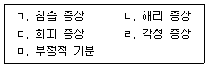
- ㄱ, ㄴ
- ㄴ, ㄹ
- ㄴ, ㄷ, ㅁ
- ㄱ, ㄷ, ㄹ, ㅁ
- ㄱ, ㄴ, ㄷ, ㄹ, ㅁ
(정답률: 알수없음)
94. 청소년 자해에 관한 설명으로 옳지 않은 것은?
- 긴장을 이완하기 위한 행동으로 볼 수 있다.
- 부모의 정서적 박탈이 위험요인으로 작용한다.
- 감각적 자극의 필요에서 비롯되기도 한다.
- 언어 능력과 사회적 기술이 높은 청소년들에게서 많이 발생한다.
- 격렬한 감정과 고통을 감소시키기 위한 대처기제로 기능한다.
(정답률: 알수없음)
95. 다음에서 설명하는 자살 모형은?
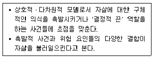
- 자살 궤도 모델(suicide trajectory model)
- 중첩 모델(overlap model)
- 3요인 모델(three element model)
- 큐빅 모델(cubic model)
- 슈나이더(Schneider) 모델
(정답률: 알수없음)
96. ( )에 들어갈 내용이 순서대로 옳게 나열된 것은?
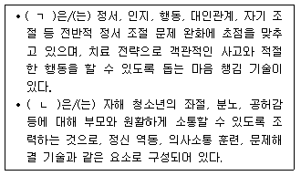
- ㄱ: 게슈탈트 치료, ㄴ: 인지행동치료
- ㄱ: 변증법적 행동치료, ㄴ: 가족 기반 치료
- ㄱ: 인지행동치료, ㄴ: 변증법적 행동치료
- ㄱ: 수용 전념 치료, ㄴ: 가족 기반 치료
- ㄱ: 현실치료, ㄴ: 대상관계 치료
(정답률: 알수없음)
97. 다음에 해당하는 용어는?
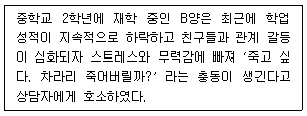
- 자살 계획
- 자살 시도
- 자살 완료
- 자살 생각
- 자살 위협
(정답률: 알수없음)
98. 청소년 위기상담자의 개입 방법으로 옳지 않은 것은?
- 문제 상황 규명
- 선택적 경청
- 정서적 지원
- 희망, 낙관적 태도의 전달
- 위기 초기에 무의식적 갈등 탐색
(정답률: 알수없음)
99. 위기개입 전문가의 행동 전략에 관한 설명으로 옳지 않은 것은?
- 클라이언트의 안전에 관심을 보인다.
- 클라이언트의 개인 욕구를 고려하지 않는다.
- 문제를 분명하게 정의한다.
- 클라이언트를 참여시킨다.
- 네트워크를 개발하고 활용한다.
(정답률: 알수없음)
100. 청소년 위기 상담자의 소진에 관한 설명으로 옳지 않은 것은?
- 소진의 회복과 예방적 개입은 개별적으로 이루어질 필요가 없다.
- 소진의 징후에 대한 알아차림은 상담자의 민감성에 달려 있다.
- 함께 일하는 상담자에게 스트레스를 준다는 점에서 전염적이다.
- 직업에서의 자율과 사회적 지지는 소진을 완충시킨다.
- 침체와 좌절을 일으키기도 하지만 성장의 기회가 되기도 한다.
(정답률: 알수없음)